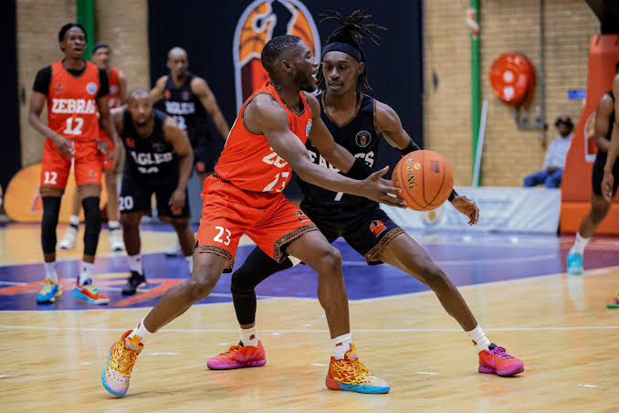
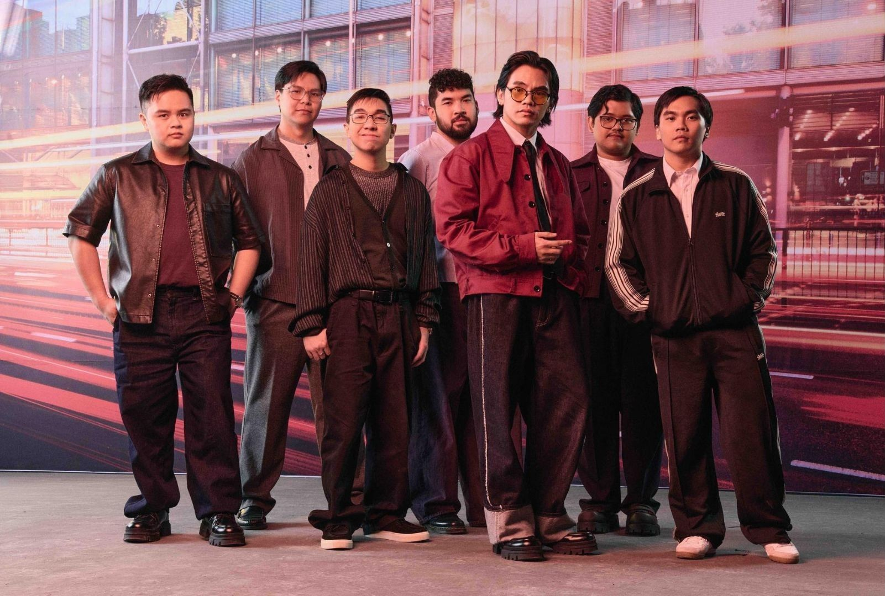
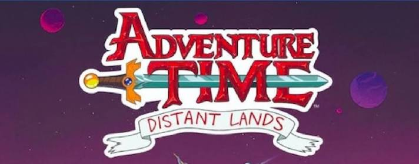
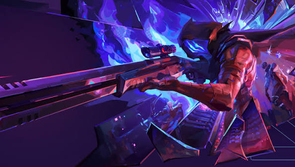
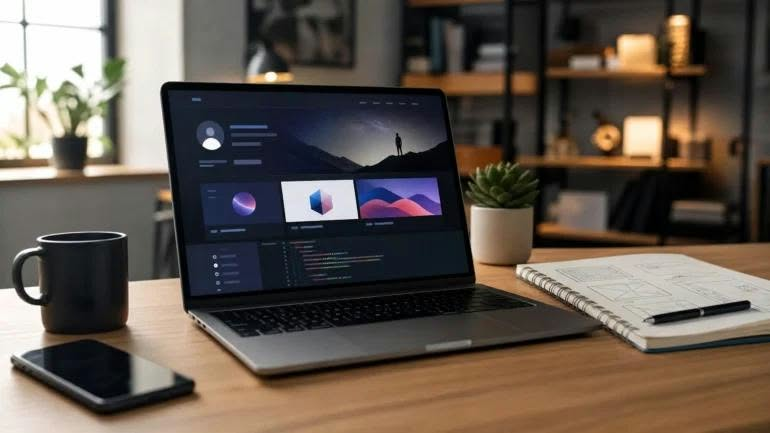

My Hobbies and Interests
These are the things I enjoy outside of class. They help me relax, stay active, and keep learning something new.
- Favorite sport
- Basketball
- Favorite hobby
- Playing online games
- Favorite food
- Chicken adobo
- Favorite drink
- Coke
Sports and Physical Activities
Basketball is my favorite sport. Playing keeps me active and gives me a break from long hours of studying.
It is a team sport, so it also reminds me to work well with others.

Music and Favorite Genres
enjoy listening to music during my free time, especially OPM and pop songs. Music helps me relax, improve my mood, and enjoy my day. I like listening to songs that have meaningful lyrics and catchy melodies.

Movies and Television Series
I enjoy watching movies, especially comedy, action, and adventure. I like movies that are entertaining, inspiring, and teach valuable lessons. Watching movies is one of the ways I spend my free time.

Online Games
Playing online games is my favorite hobby. It helps me relax and have fun, and Valorant is one of my go-to games.

Food and Culinary Interests
Chicken adobo is my favorite food. It is a Filipino classic that is simple, savory, and always satisfying.
When it comes to drinks, I will always pick a cold Coke.

Travel and Outdoor Activities
Traveling to different places is one of my goals in life. I would love to visit Japan someday because I want to experience its beautiful places, culture, and food. I also enjoy exploring new places and making unforgettable memories.
Other Personal Interests
I enjoy trying out new code and tech because I love learning new things. As a BSCS student, I am excited to explore different programming languages.
I also like trying different things in general, because every experience teaches me something.
